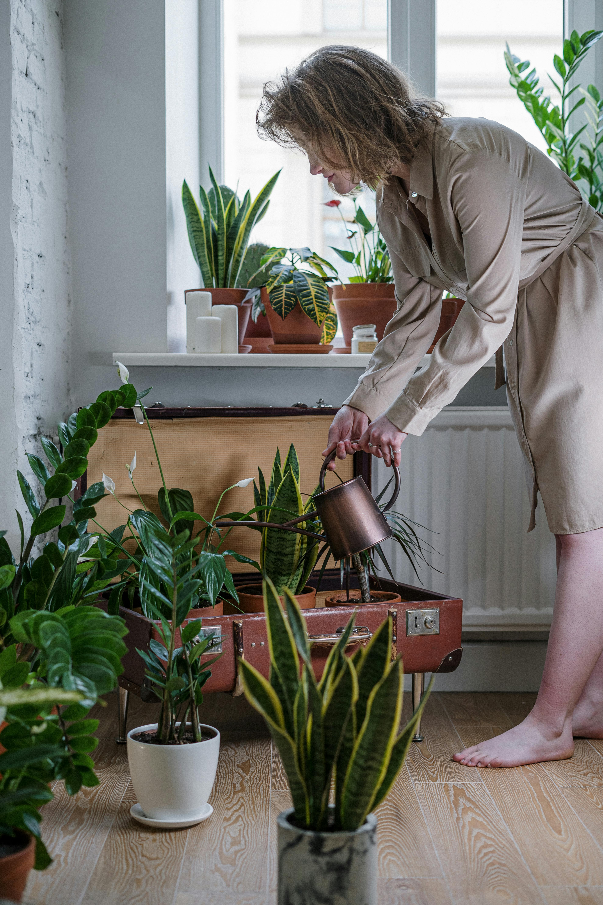

Ez az aloldal azokat a növényeket és megoldásokat mutatja be, amelyek ideálisak a kis városi helyekre, mint erkélyek, ablakpárkányok, teraszok vagy akár beltéri kis helyek. Az aloldal célja, hogy inspirálja a látogatókat arra, hogy a legkisebb helyeken is rengeteg zöldséget, fűszert és virágot termeszthetnek.
Növénytippek kis helyre – Hogyan alakíts ki zöld oázist még a legkisebb térben is?

1. Fűszernövények kis helyre
Bazsalikom: Remek választás, mivel gyorsan nő és nem igényel túl sok helyet. Nagyon jól érzi magát egy napos erkélyen vagy ablakpárkányon. Rozmaring és kakukkfű: Kisebb cserepekben is elférnek, és egész évben hasznosíthatóak, mivel mindkettő jól bírja a szárazabb időszakokat. A rozmaring ráadásul rendkívül illatos, így egy kis zöld oázis szerves része lehet. Petrezselyem és menta: Szintén könnyen kezelhetőek, és nem igényelnek túl nagy helyet. Petrezselymet akár egy kisebb erkélyláda is elbír, míg a menta inkább nagyobb cserepet igényel, hogy ne terjedjen el túlságosan.
2. Zöldségek kis helyre
Saláta: Az egyik legjobb választás kis helyre. Gyorsan nő, és akár erkélyen is termeszthető. Lehet akár többféle salátát ültetni egyetlen hosszú balkonláda egyes részeibe. Koktélparadicsom: A koktélparadicsom különösen jól alkalmazható kis helyeken. A cserépben növő növények bőven termelnek kis, édes paradicsomokat. Retek: Ha gyors eredményre vágysz, a retek kiváló választás! Nagyon gyorsan nő és kis helyet igényel. Az erkélyek és a teraszok kedvelt növénye. Borsó: A borsó is jól fejlődik a kis helyeken, ha megfelelő támasztékot biztosítunk neki. Akár egy kisebb kúszó hálóval is elfér.
3. Virágok kis helyre
Petúnia és begónia: Mindkét növény nagyon jól működik erkélyeken és ablakpárkányokon, élénk színű virágaikkal. A petúnia különösen jól bírja a napsütést. Népszerű balkonvirágok: Ilyenek például a muskátli és a geránium. A balkonládákba és ablakokba ideálisak, hiszen a virágaik színt és életet visznek a teraszra. Levendula: A levendula nemcsak gyönyörű és illatos, hanem jól bírja a szárazságot és a napos helyeket is. Kisebb helyekre is tökéletes.
4. Ötletek maximális térkihasználásra
Vertikális kertészkedés: Ha nagyon kis helyed van, gondolj a vertikális kertészkedésre. A növények függőleges elrendezése, például függő kosarak, függőládák, vagy rácsokra felfuttatott növények segítenek, hogy több növény fértessé váljon anélkül, hogy a helyet túlzottan elfoglalnák. Erkélyláda: Az erkélyek egyik legegyszerűbb megoldása az erkélyládák használata, amelyekbe többféle növényt ültethetsz, így kihasználva a teret. Az erkélyek szélén elhelyezett növények nemcsak praktikusak, de dekoratívak is. Mini zöldségkert: A kis kertkészlet és cserepek egy kis asztalon elhelyezhetők, így minden egyes növényt könnyen gondozhatsz. Használhatsz kis tárolóedényeket, mint régi műanyag dobozok, vagy egyéb újrahasznosított eszközöket is.
5. Ötletek kezdőknek:
Kevesebb, de jobb: Ne próbálj meg túl sok növényt ültetni egy kis helyen. Kezdj pár egyszerű növénnyel, például egy-két fűszernövénnyel és egy kis salátával, és csak akkor bővítsd a választékot, ha már tapasztalatot szereztél. A megfelelő talaj: Mivel kis helyről van szó, fontos, hogy a növényeknek megfelelő talajt biztosíts. A növények jóléte nagyban függ a megfelelő, jó vízelvezetésű talajtól.
Vissza a Főoldalra